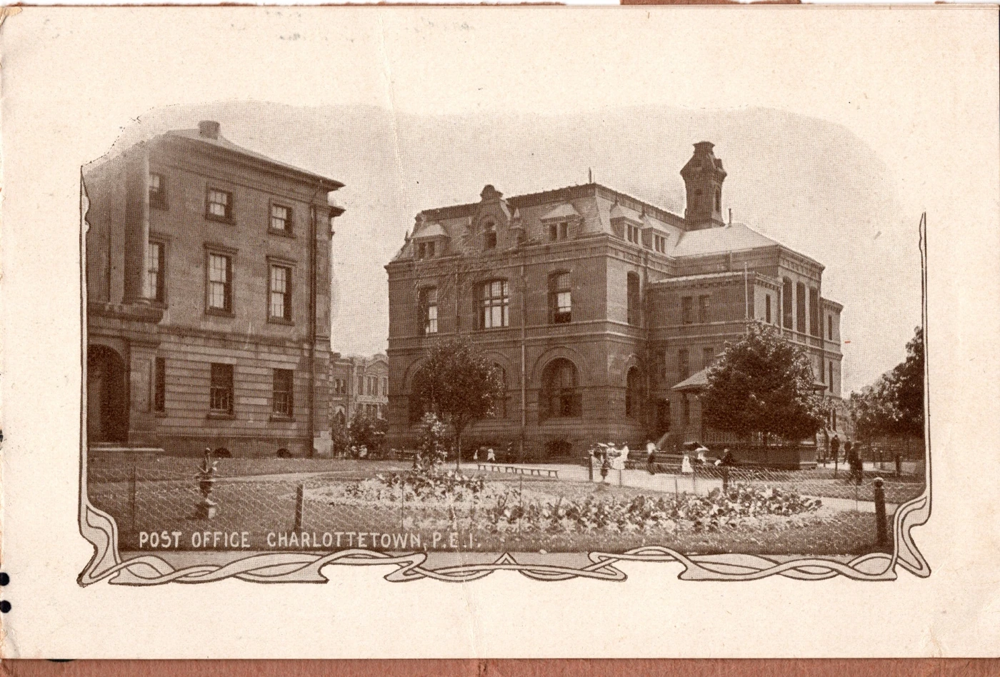
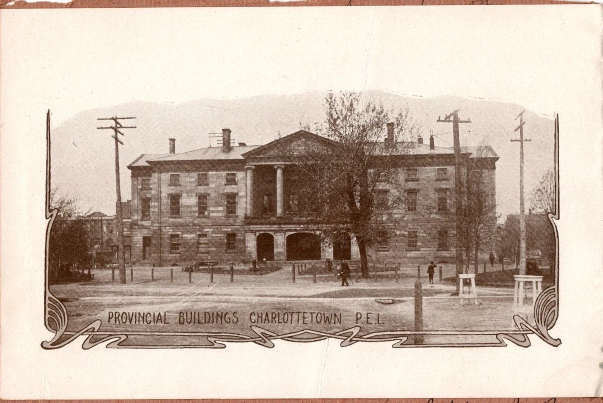
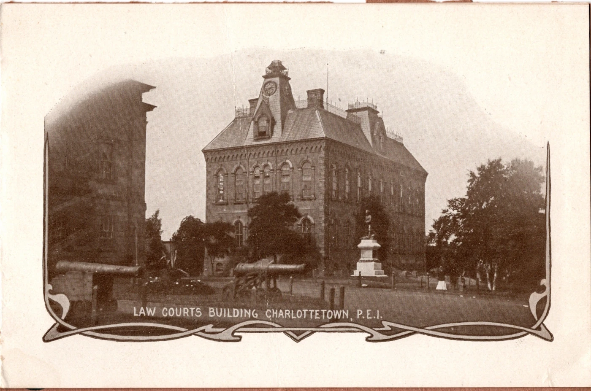
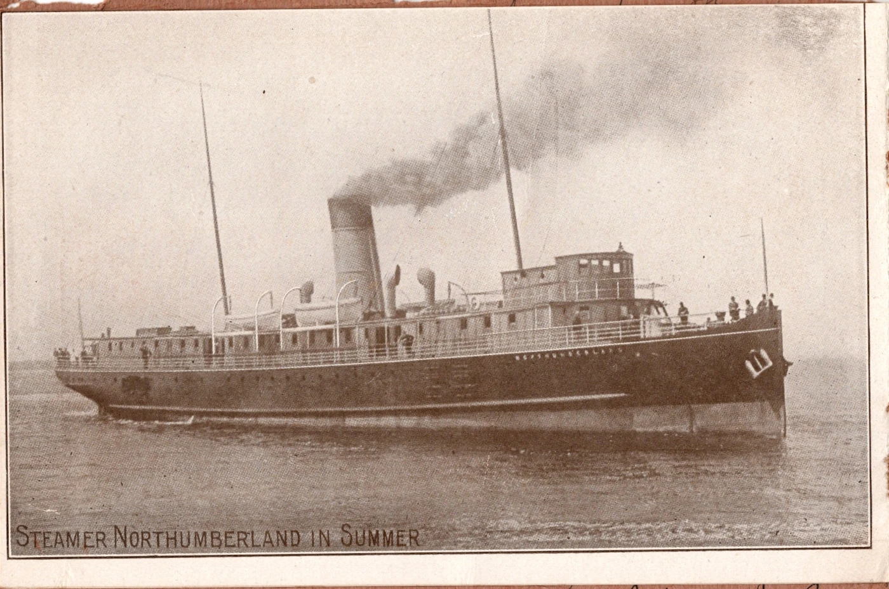
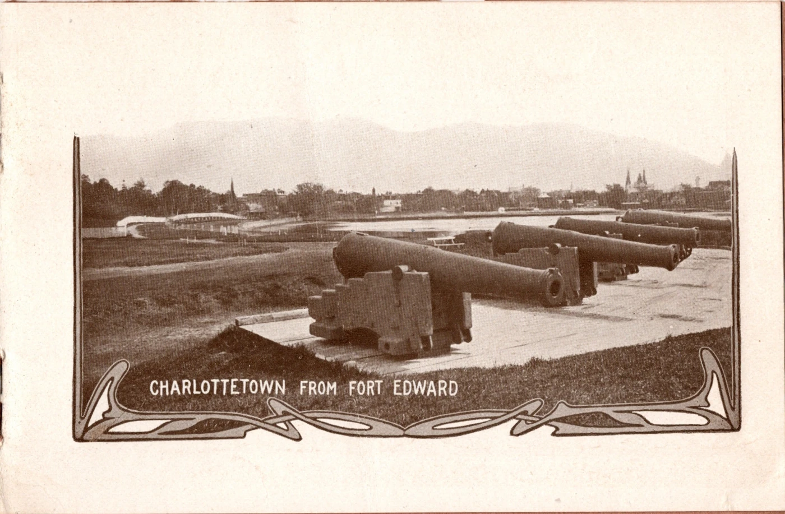
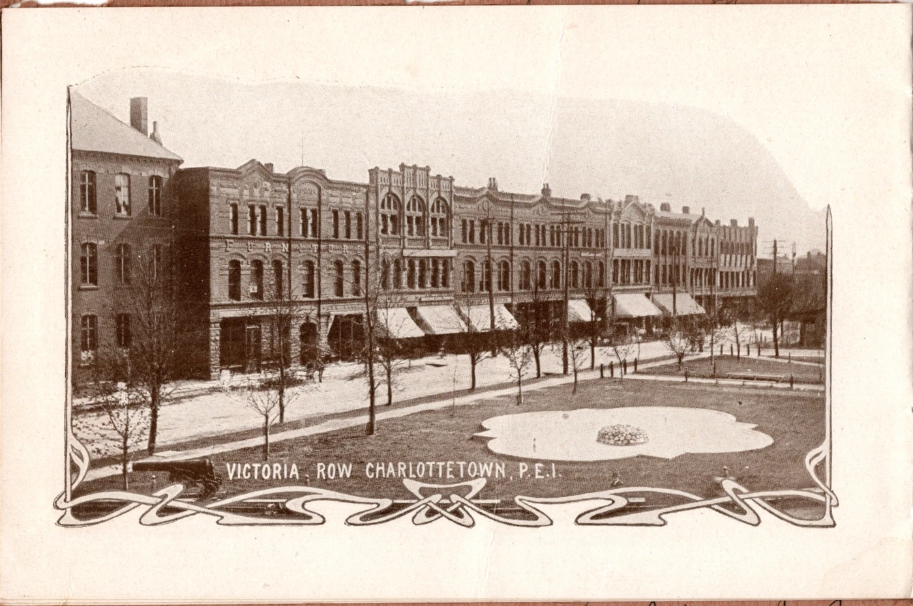
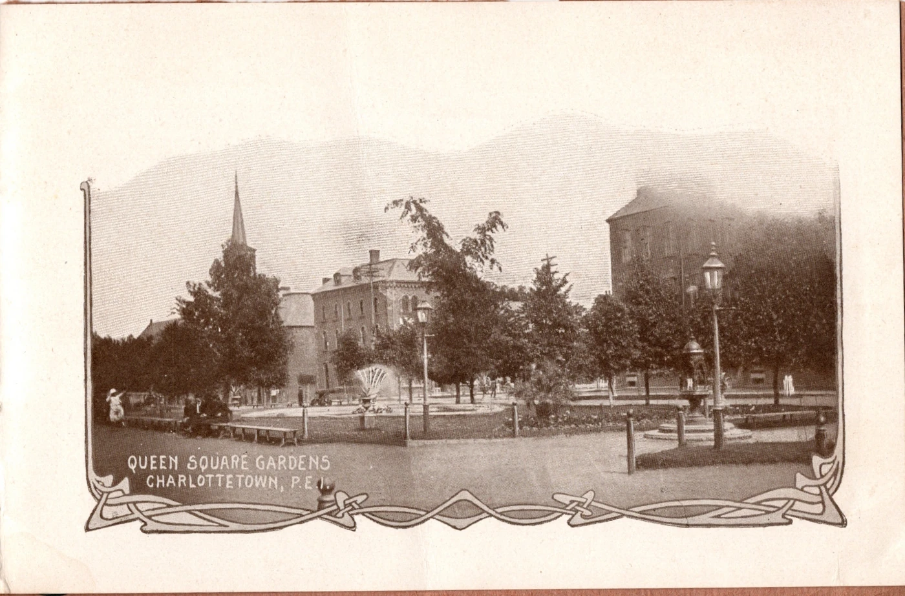
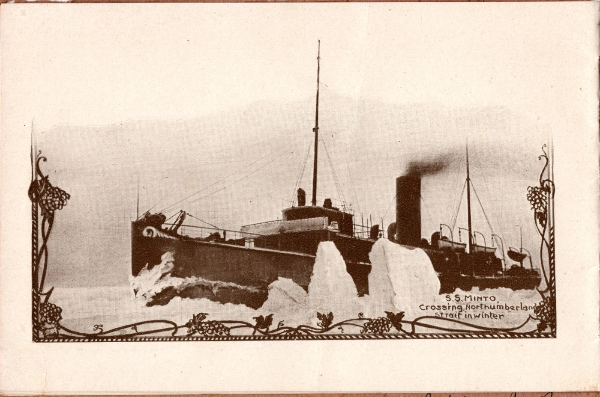

Eight Views in One Letter: McCoy’s Charlottetown Souvenir
“I haven’t heard from you for a long time.” Letitia Bell had news for Bertha: someone was feeling better, another visit home was coming, and a holiday was expected at the end of the month. Around that ordinary letter, McCoy supplied a small tour of Charlottetown. Open the salmon-coloured cover and eight pictures follow, from the Post Office and Queen Square to a steamer pushing through winter ice.

The cover calls it a Souvenir Letter and names the McCoy Printing Co. of Moncton, New Brunswick. It could carry a personal message and a little collection of views in one mailing. This copy went to Mrs. George A. Loman at North Troy, New York, on rural delivery route No. 2. Inside, she is simply “Dear Bertha.” The clear 1910 postmark dates its journey; the stationery’s printed date line still begins “190”.
A letter with room for a city
Letitia wrote on the inside of the wrapper. The pictures occupy the leaves that follow, so the message leaves the views untouched. Her plans are pleasantly modest:
“I suppose I will get my vacation the last of the month. I expect to stay home most of the time. Write soon. With love to all.”

McCoy’s name belonged to a business with a real Island presence. Harry Holman traced Annie McCoy’s Postcard Shop to the southwest corner of Queen and Richmond Streets, using photographs, newspaper references and an insurance plan. The shop was operating around 1908. Carter and Taylor also sold McCoy postcards: their names appear beneath several of the pictures compared here.
The booklet gathers a recognizable Charlottetown: public buildings, shops, gardens, the waterfront battery and the steamers linking the Island to the mainland. Most views have flowing Art Nouveau-style borders. The Northumberland has a simple rectangular frame; the Minto has its own floral surround. Those details turn out to be useful when the booklet is opened beside a box of postcards.
Five of the eight pictures amount to a walk around one square. The Post Office, Provincial Buildings, Law Courts, Victoria Row and Queen Square Gardens are different faces of Charlottetown’s civic centre. Reg Porter’s history of the city plan takes that arrangement back to Charles Morris’s 1768 survey and Thomas Wright’s 1771 plan, with Queen Square at the centre of a town laid out around five squares. McCoy’s booklet turns that planned space into a succession of views: cross the gardens, look towards the shops, turn to the public buildings. The battery and the two steamers then take the little tour out towards the harbour and the Strait.
Eight views, eight postcard matches
Every one of this booklet’s eight views has a matching McCoy postcard in the collection. The comparisons below follow the booklet’s order. Each shows the booklet leaf beside an actual postcard; the linked card number opens its front, reverse and catalogue record. Five views also have colour companions in McCoy’s numbered Acadian Series, shown beneath their pairs. All the postcards illustrated here are owned.
The postcard backs make the connection explicit. The early monochrome examples carry the ornate “Souvenir Post Card” heading and McCoy’s Moncton imprint. The colour Acadian cards have a different, divided back with a series number.


1. Post Office
The first picture looks across the garden towards the Post Office, with its neighbouring block filling the left edge. The people by the path, the trees and the long ribbon of ornament recur on the postcard. Carter & Co.’s edition adds two silver-coloured coins in the sky and the shop’s name below the border. The booklet leaves that sky clear.


Other monochrome copies and decorative editions in the collection: 0161, 2325, 2662, 2755.

2. Provincial Buildings
Province House appears beneath the caption “Provincial Buildings.” Look at the tree crossing the right-hand windows and the figures beside the fence: this is the same photograph on the booklet leaf and postcard 2244, down to the flowing border. This plain McCoy edition is an especially close companion. Other copies add coins, with Carter or Taylor named below the picture.


Other monochrome copies and decorative editions in the collection: 0155, 0160, 2289, 4429.
3. Law Courts Building
A horse and carriage stand in front of the Law Courts, among the cannons and the monument in the square. The clock tower rises above them. The matching postcard keeps the same decorative border and adds a pair of copper-coloured coins in the upper right corner. Its front names Carter & Co.; the reverse names the McCoy Printing Company.


Other monochrome copies and decorative editions in the collection: 0159, 2857, 3627, 4430.
Also in colour: Acadian Series no. 74 · in the collection
The Law Courts also appear in colour as Acadian Series no. 74. The postcard fills more of its surface with the scene and dispenses with the ribbon border.

Another copy in the collection: 0240.
4. Steamer Northumberland in Summer
At the middle of the booklet, the Northumberland takes almost the whole page. Smoke streams away from the funnel, passengers gather forward and the bow points to the right. The plain rectangular surround gives the ship a different treatment from the city buildings. Postcard 4194 repeats the ship, smoke and caption, “Steamer Northumberland in Summer.”


5. Charlottetown from Fort Edward
The cannons make an unmistakable foreground, leading the eye across the water to Charlottetown’s roofs and spires. The booklet and postcard share the same alignment of gun barrels and the same sweeping border. This Carter edition adds a coloured coat of arms above the city; other copies move the emblem or substitute coins.


Other monochrome copies and decorative editions in the collection: 0166, 0167, 0535, 1939, 2484, 2756.
Also in colour: Acadian Series no. 59 · in the collection
Acadian Series no. 59 turns the same familiar prospect into a colour view, with green grass around the battery and blue sky above the city.

6. Victoria Row
Awnings shade the shops along Victoria Row. Young trees line the street, and the pale, flower-shaped bed in the foreground makes the pairing easy to recognize. Postcard 3063 gives us the view with its ribbon border and no added flag. The collection also holds versions with a bright red ensign above the shops.


Other monochrome copies and decorative editions in the collection: 0138, 2661, 2663, 2842.

7. Queen Square Gardens
Benches, lamps, trees and the fountain make a small town garden worth sending through the mail. The steeple at the left and the large building at the right anchor both versions. On postcard 0170 a Union flag occupies the upper right corner; the booklet has the garden and its border alone.


Other monochrome copies and decorative editions in the collection: 0169, 1011, 1456, 1711.
Also in colour: Acadian Series no. 16 · in the collection
Acadian Series no. 16 is captioned “Queen Square Garden” in the singular. Its colour treatment brings out the lawns, brickwork and spray from the fountain.

8. S.S. Minto in Winter
The last view exchanges summer gardens for a wall of broken ice. The Minto’s bow rises behind it, enclosed by a border of curling vines and leaves. Postcard 2394 carries the same ship, ice and floral surround, with two copper-coloured coins added above. The caption describes the Minto crossing Northumberland Strait in winter. Set against the Northumberland’s summer passage, it gives the booklet a striking change of season.


The pleasure of keeping them together
Coins and flags could dress up a postcard; a coloured sky could give a familiar building another outing. In this booklet the pictures become a sequence. The reader passes from the Post Office to the Provincial Buildings and Law Courts, boards the summer steamer, looks back at Charlottetown from the battery, visits the shops and gardens, and finishes among the ice.
Here, everything returns to one modest request: “Write soon.” Bertha received the news and eight pictures to keep with it.
Explore further: the complete souvenir letter in six scans; the McCoy postcard albums; Harry Holman’s The lost postcard shop. The booklet and every postcard illustrated above are from the collection. The larger numbers such as 0162 and 4194 are collection identifiers; the Acadian numbers are McCoy’s printed series numbers.